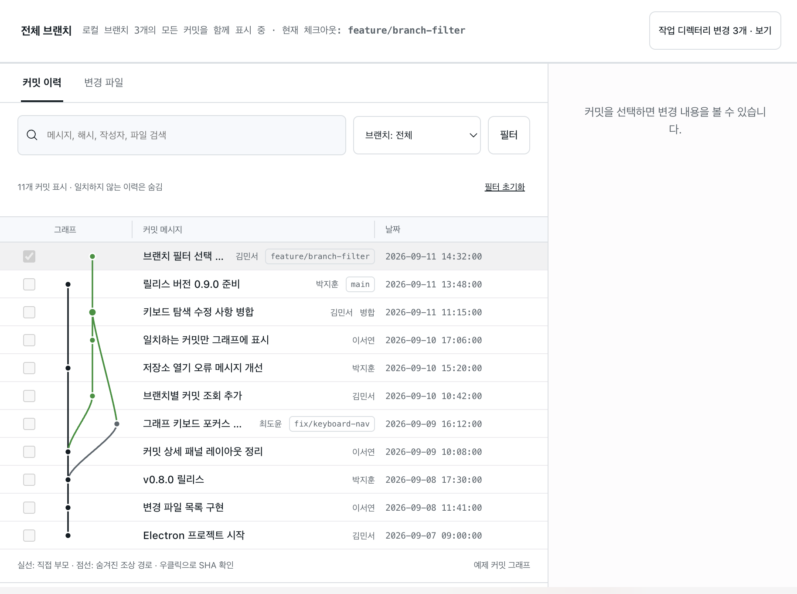
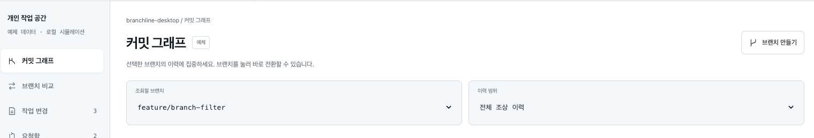
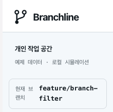
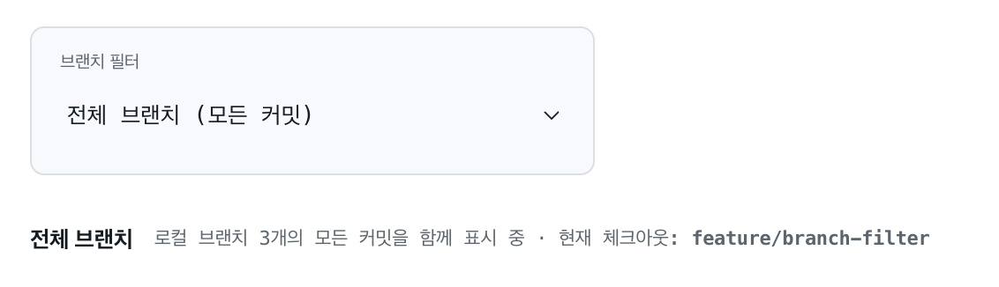
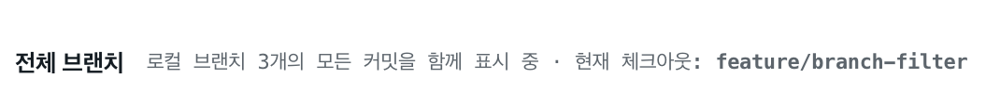
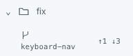
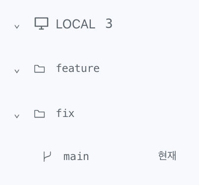
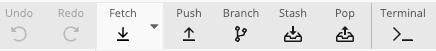

Preview · Brand assets
아래는 모두 Branchline 자체(데모 모드)에서 나온 실제 화면입니다 — 경쟁 제품 참고 자료는 포함하지 않습니다 (context/provenance.md 참고).








원본 소스 프로젝트에는 GitKraken 스크린샷 9장이 더 있었습니다 (실제 회사명·실명·내부 티켓 번호 포함). 저작권·개인정보 보호를 위해 이 디자인 시스템 패키지에는 포함하지 않았습니다 — 자세한 내용은 context/provenance.md.
context/provenance.md